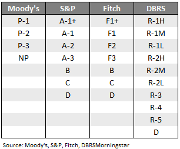
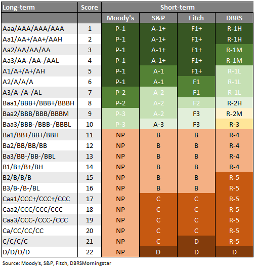
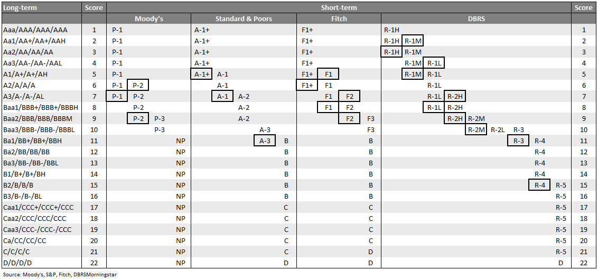
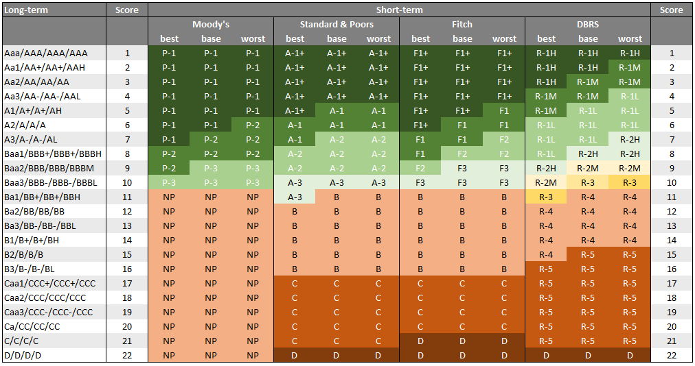

Short-term ratings
Rating agencies publish short-term ratings in order to express a company's ability to repay debt that matures within the next twelve months. A rating scale representing short-term ratings looks somewhat different compared to a long-term rating scale. Also, the rating scales differ when compared across different rating agencies.
Rating scales
When looking at the short-term rating scales, S&P and Fitch are quite comparable.
However, Moody's and especially DBRS's rating scales are different.
This makes it hard to compare short-term ratings across agencies.

Comparing ratings
Let's say we want to compute the average short-term rating across all securities within a portfolio. As a matter of fact, most of the time, not all securities in a portfolio do possess a short-term rating from one particular rating agency. If you are lucky, all securities might have at least one short-term rating, but potentially from different rating agencies. While security A might have a rating from S&P and Fitch, security B and C might have a rating from Moody's or DBRS, if at all.
If we were talking about long-term ratings, the path to go seems clear:
- Translate the ratings into numerical rating scores
- Compute the sum-product of the individual security weights and the rating scores
- Translate the outcome back to a human-readable rating.
With short-term ratings, it's not that easy. The reason is the difference in rating scales. These differ in length, which means even if we attach a rating score to a particular rating, the scores are not comparable among different rating agencies.
Now, one way to solve that problem is to take into consideration that a company's short-term rating has a tight relationship with its long-term rating. The different rating agencies describe this relationship as follows:

The main idea is to determine an equivalent long-term rating score for every short-term rating. It's probably best to use an example to show what it looks like.
Taking Moody's rating scale, it is obvious that a short-term rating of P-1 is equivalent to a long-term rating between Aaa and A2. Or, to express it in terms of equivalent long-term rating scores, a rating of P-1 is equivalent to long-term rating scores between 1 and 6. Going with S&P, an A-1+ rating has an equivalent long-term rating score between 1 and 4.
To compare ratings across agencies, we need a clear-cut relationship between the
human-readable rating and its corresponding rating score. Something like having a
score between 1 and 6 isn't helpful at all. So, what to do?
We could take the average of the rating scores and assign this average
equivalent value (AEV) to the respective short-term rating. For Moody's, a P-1 rating
will have assigned an AEV of 3.5 (average of 1 and 6). An A-1+ rating would be
equivalent to an AEV of 2.5 (average of 1 and 4).
Once you assign a concrete short-term rating score (AEV) to every security in your portfolio, your problem has basically been solved. From here on, the process is the same as when working with long-term ratings.
There's one more catch...
All rating agencies' work with some overlaps in their rating scales. For example,
Moody's usually assigns a short-term rating of P-1 to an A2-rated company. However,
Moody's reserves itself the right to assign a short-term rating of P-2, if the
rating agency concludes that the liquidity situation of this particular company is not
compatible with a P-1 rating. In other words, even if this company has been rated A2
from a long-term perspective, there might be some issues that the company has to
deal with during the next twelve months and these issues might have greater risks
attached to it.
On the flip side, consider a company with an A3 rating. It would usually get
assigned a rating of P-2. However, there might be situations where the rating agency
concludes that the liquidity outlook is somewhat better, which justifies the
assignment of a P-1 short-term rating.
Different rating agencies have different overlapping areas. Here's the full picture:

Well, now we have a problem. Let's say you have a long-term rating score of 6.
What's the correct short-term rating? — The answer is: You can't tell. It could be
P-1 or P-2 (in terms of Moody's). Having said this, P-1 is still the most likely
outcome.
Anyway, at that stage, you have to make up your mind and take a decision. Remember,
there's no right or wrong, just different ways of getting the job done.
pyratings offers three distinct strategies in order to translate a long-term rating score into a short-term rating.
- Strategy 1 (best):
You always choose the best possible short-term rating. In the case of a rating score of 7, that would translate into a short-term rating of P-1.
That's the optimistic approach. - Strategy 2 (base):
You always choose the short-term rating that a rating agency would usually assign if there aren't any special liquidity issues (positive or negative). In that case, a rating score of 6 translates into a P-1 rating, while a rating score of 7 would translate into a P-2 short-term rating.
That's the base-case approach. - Strategy 3 (worst):
You always choose the worst possible short-term rating. In the case of a rating score of 6, that would translate into a short-term rating of P-2.
That's the conservative approach.
pyratings's default strategy is strategy 2 (base) as it is probably the best fit for most situations.
Here's a summary of all possible translations depending on the chosen strategy.

One of the advantages of using different strategies is to avoid any overlapping ranges. Every short-term rating has a one-to-one relationship with an equivalent long-term rating. This makes the translation from a human-readable rating into a rating score a clear-cut.